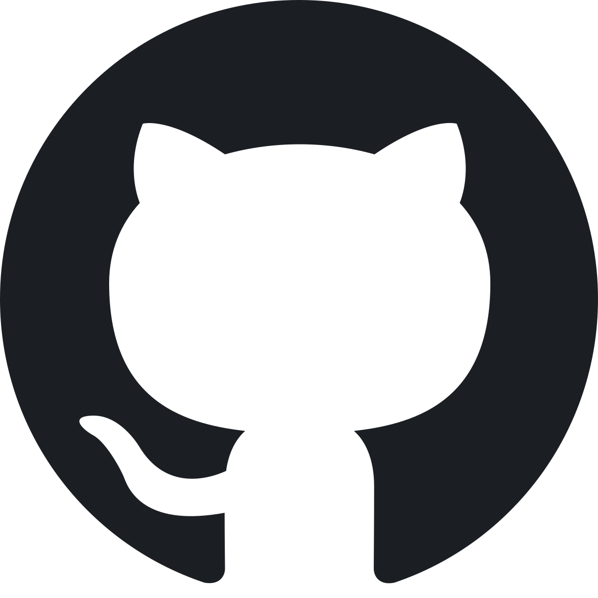

Header logo
All-Paths
About
FAQ
This website is awesome
TOP is a great platform for anyone to learn web-development
Sign up
Connect with odin-project
discord
Great community for your TOP journey
twitter
Some success stories from TOP students
insta
Who doesn't like memes

github
Visit odin's own repository
Its just been a week since i started odin-project. Even as a beginner myself,into web-development, odin-project got all my attention from the very beginning. I am really happy that i took the initiative to start TOP.
-myself
Call to action! It's time!
Sign up by clicking the button
Sign up